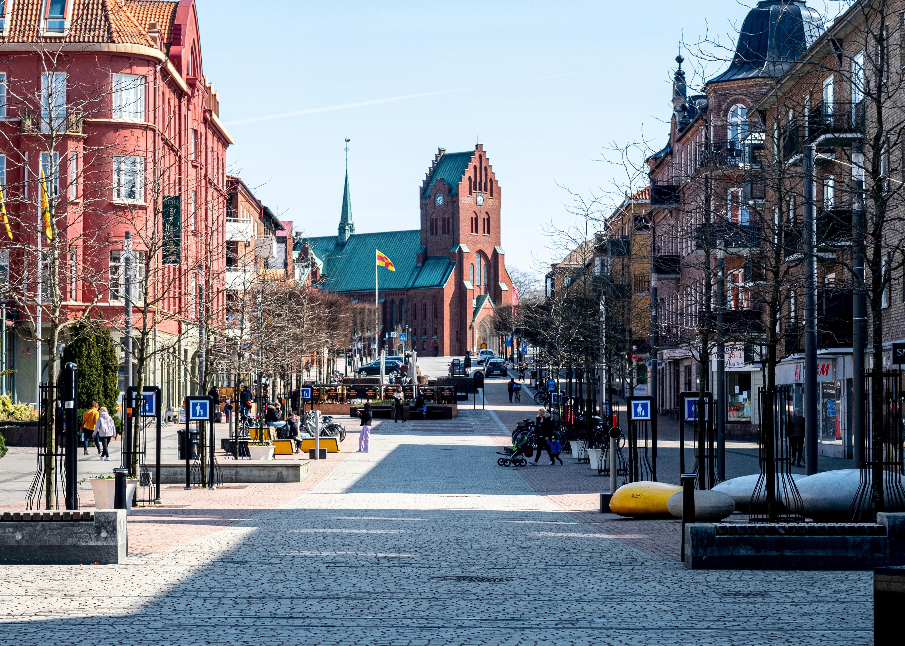
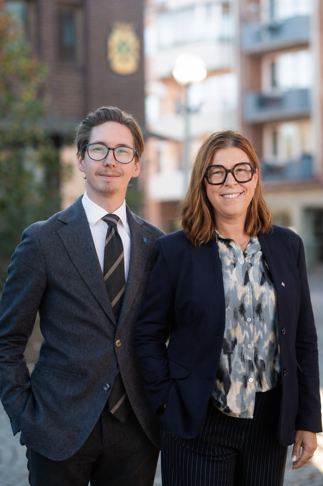

Kristdemokraterna Hässleholm 2026
Tro på Hässleholm!
Vård, vardag och värderingar. Här får väljare en snabb väg in i valprogrammet och kan klicka sig vidare bland politikområdena.
Utgångspunkt
Hässleholm kan bättre
Programmet frontas av Simon Berneblad Mandegård och Erika Heil Utbult. Det beskriver en kommun med starka orter, engagerade människor och rikt föreningsliv, men där politiken behöver lägga mindre kraft på symboler och mer på vardagen som människor faktiskt möter.

VÃ¥r politik
Klicka på ett område
Fokusfråga
Välj område. Få beskeden direkt.
VÃ¥ra kandidater
Möt laget bakom programmet
Håll muspekaren över ett kort för en snabb presentation.
Förslagskort
Ett konkret KD-förslag i taget
För väljare som vill få grepp snabbt: bläddra eller slumpa fram ett förslag ur valprogrammet.
Nära dig
Hela kommunen ska fungera
Programmet återkommer till lokala utvecklingsplaner, närservice, kollektivtrafik, landsbygdsskolor, tätortsmiljon och mötesplatser i hela kommunen.
Bli en del av Team Busch